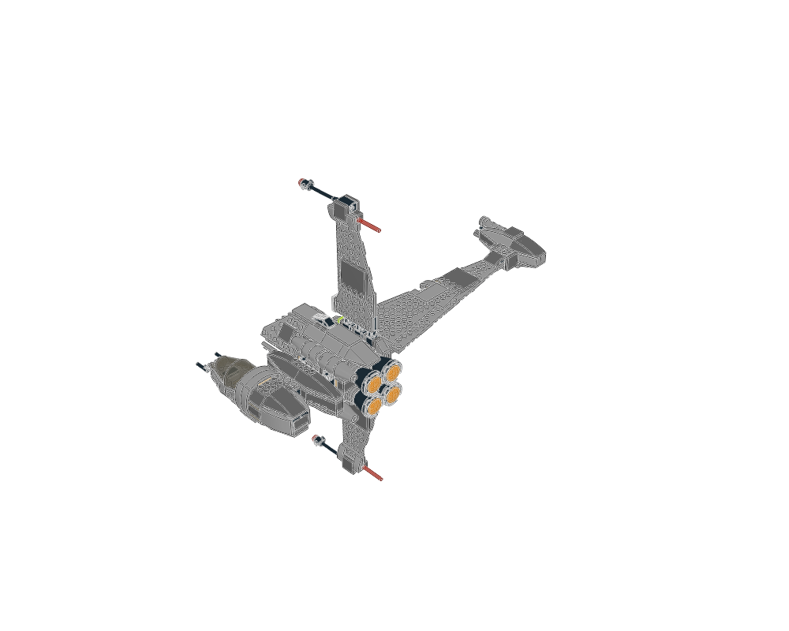
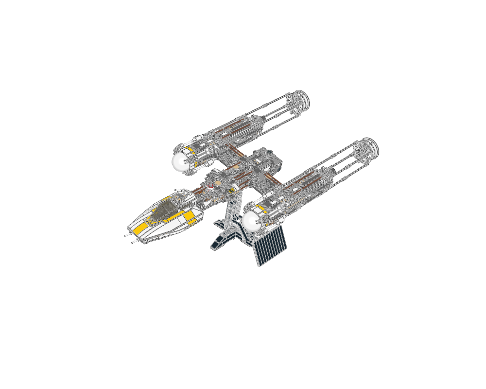
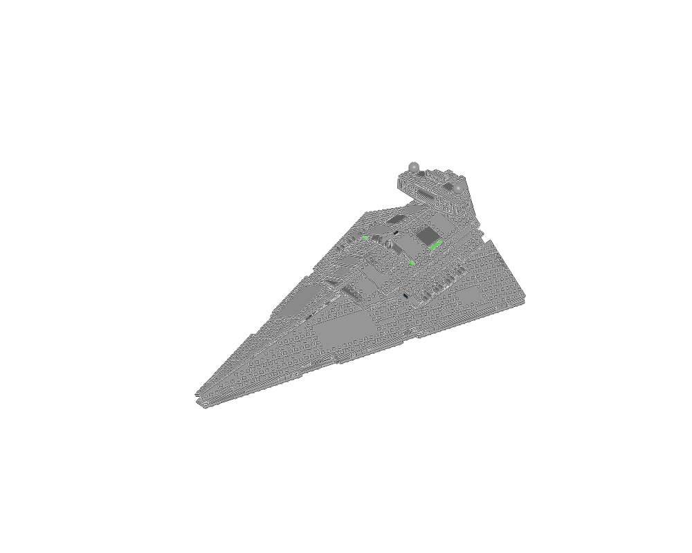
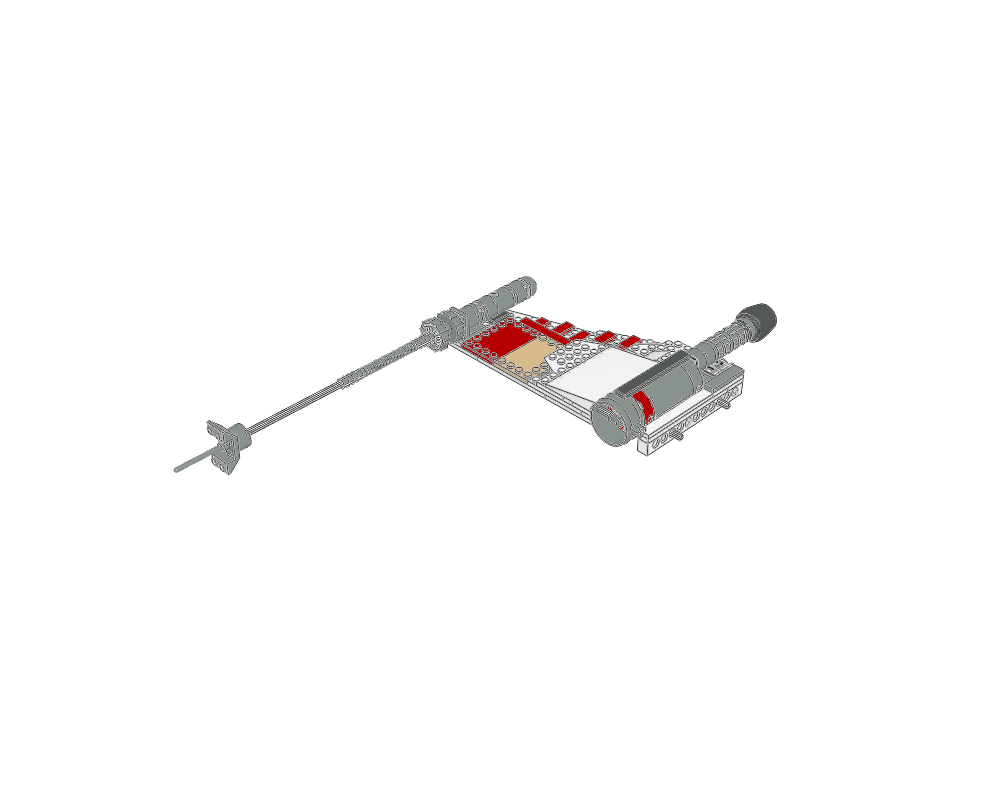
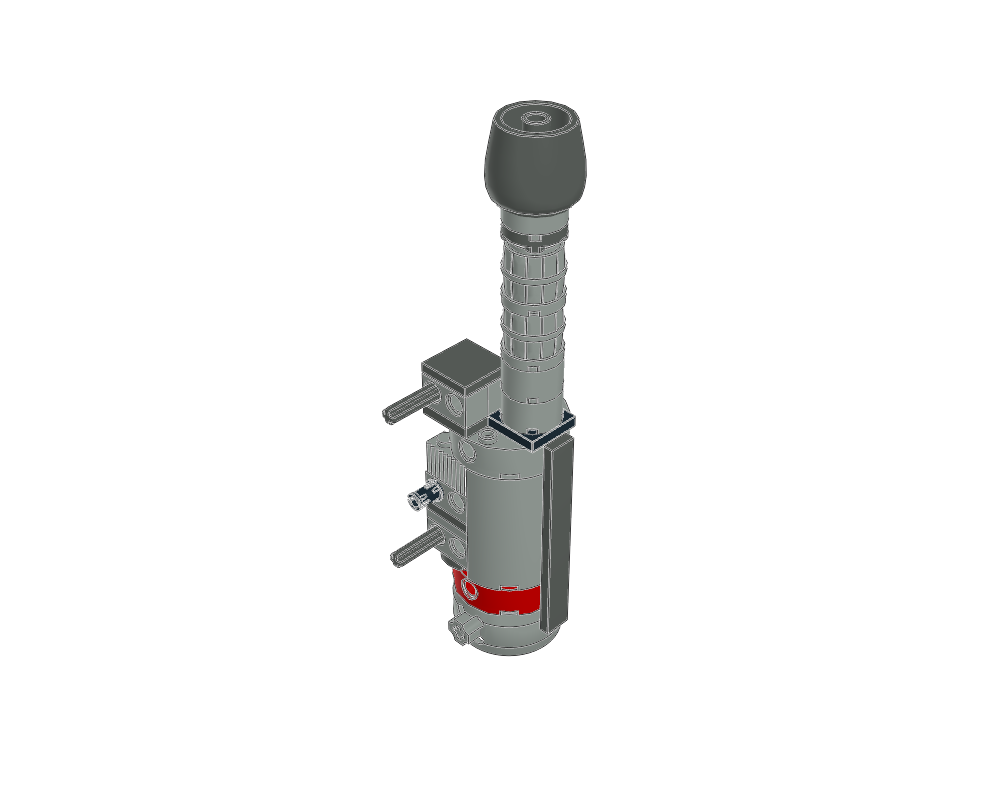
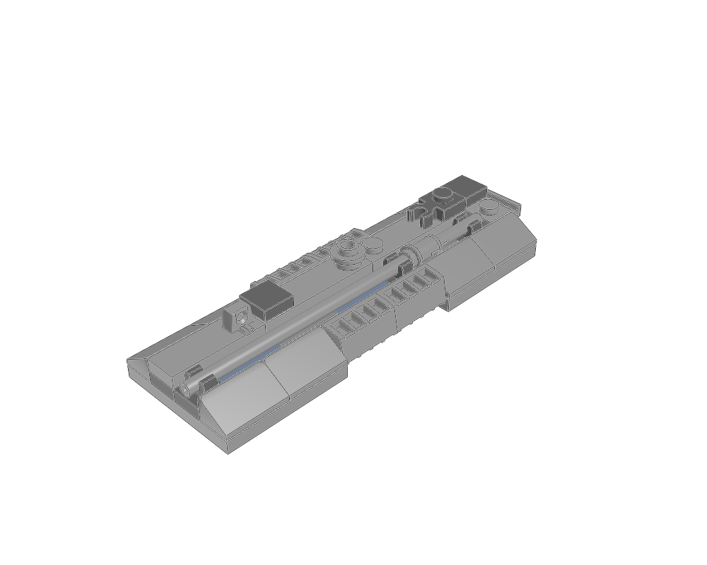
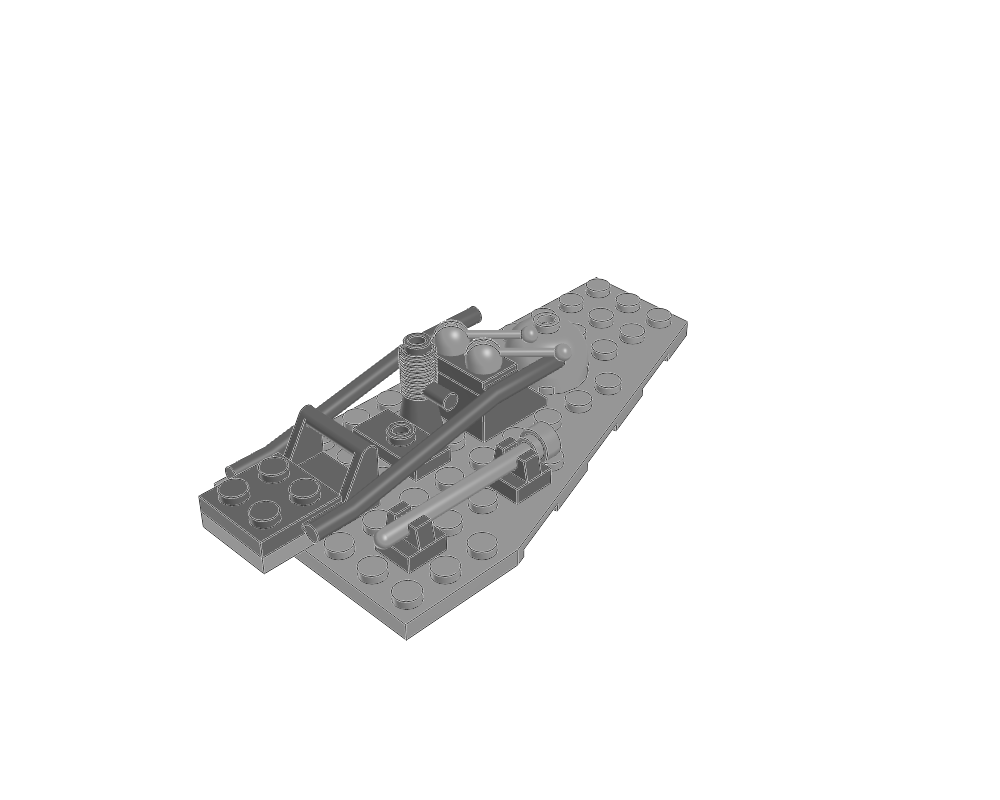
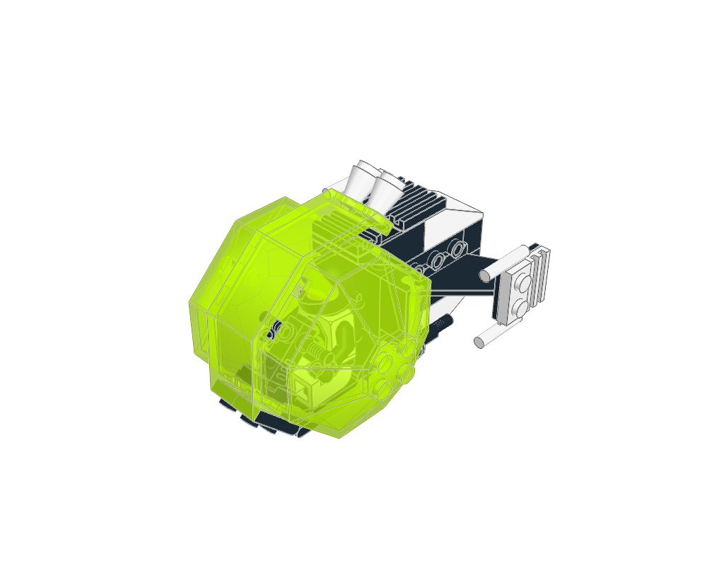

B-wing starfighter
adapt · 434 parts
Build a distinctive asymmetric starfighter around a narrow spine and separate wing masses.
Construction guideStudy whole ships for proportions. Open smaller constructions to learn their parts and build order. Inspiration entries retain unresolved source errors and cannot be exported as checked assemblies.

adapt · 434 parts
Build a distinctive asymmetric starfighter around a narrow spine and separate wing masses.
Construction guide
inspiration · 1493 parts
Use a long spine and paired nacelles to create an immediately readable heavy starfighter.
Construction guide
inspiration · 1335 parts
Layer a broad wedge hull, narrow edge trenches and smaller superstructure to establish capital-ship scale.
Construction guide
adapt · 125 parts
A long spacecraft wing can carry an engine pod and a slender tip feature while retaining a layered, readable silhouette.
Construction guide
adapt · 41 parts
Use genuine cylinders and concentric round parts to give an engine a convincing layered profile.
Construction guide
adapt · 31 parts
Combine sloped armour with a small raised vent cluster and a deliberate hinge edge.
Construction guide
adapt · 15 parts
Small familiar LEGO fittings can suggest machinery when arranged in a coherent recessed service bay.
Construction guide
adapt · 49 parts
Design the cockpit envelope around real canopy halves and hinges before closing the hull.
Construction guide